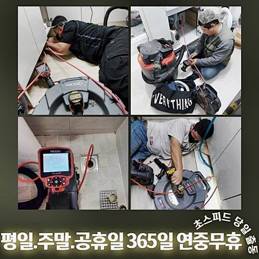
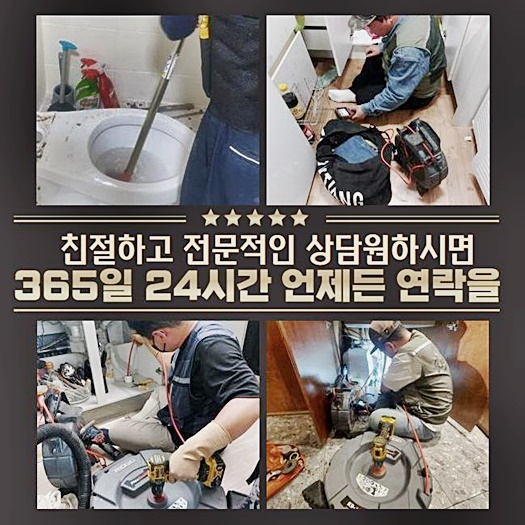
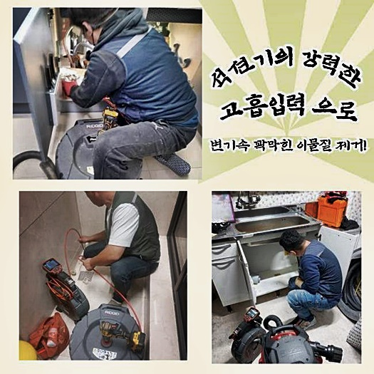
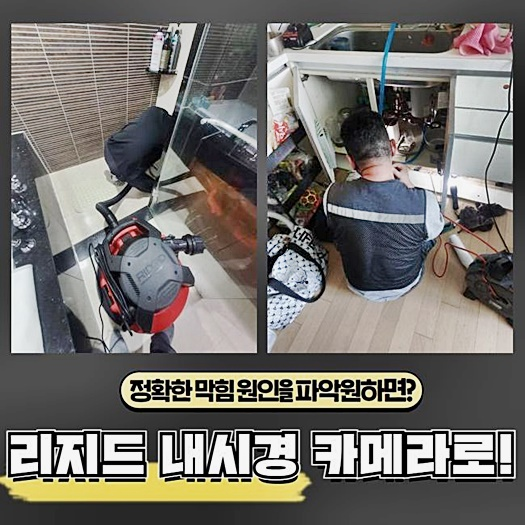
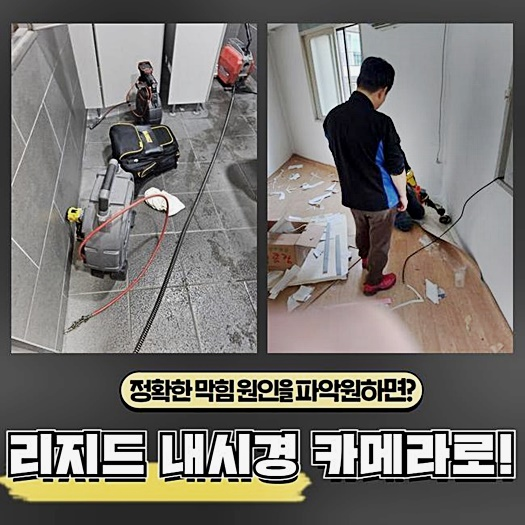
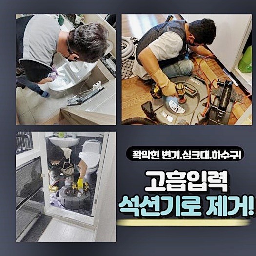

🏠 부천 성곡동대변기뚫음 신흥동 하수관고압세척 배관설비공사
용인 변기막힘 전문 시공 후기

📋 작업 개요
- 위치: 용인
- 서비스 유형: 변기막힘, 하수구막힘, 배관막힘, 누수수리, 역류해결, 뚫는업체, 배관청소, 고압세척, 설비공사, 악취차단
- 작업 일시: 2024. 6. 20. 10:24
- 업체명: 하수구수사대 (010-5615-2118)
🔍 문제 상황
부천 성곡동대변기뚫음 신흥동 하수관고압세척 배관설비공사
안녕하십니까 배관청소에 대한 이야기를 해드릴게요
배수파이프는 다양한 오물이 방출되는 곳이죠 그리고 사이즈가 그리 크지 않습니다
만약에 순수한 액상만 유입된다면 별 트러블이 안 일어나겠으나 실수로 커다란 덩어리가 들어가면 정체된 배관을 만날 수도 있답니다
특별히 생선 뼈나 장난감 등 여러 가지의 이물들이 믹스되는 경우 배관이 정체가 심화되죠 이때엔 제힘으로 수선하기 어려운 순간이 많아요
안에서 벌어진 일은 바깥에서 파악하기 곤란한데요 잔재들이 쌓여 바깥으로 표출되기 이전엔 깨닫기 힘들죠
여러 음식들을 조리하는 주방의 경우엔 평상적으로 신경을 쓰지 않는다면 냄새가 올라오거나 정체되는 상황이 빈번하게 나타나는데요
간혹가다 음식물찌꺼기에서 배출된 오일류가 쌓이면 간단히 처리하기 힙겹죠
그러므로 이러한 사태에선 하수구와 관련한 숙련가에게 문의해서 도움을 받는 게 좋아요
우리들은 급작스런 배관고장으로 생활에 어려움을 겪고 계신 의뢰자님께서 급박한 출장을 바라셔서 더더욱 바삐 움직였어요
문의자분의 의뢰에 철저히 응하여 목적지에 다다르면 저희들은 풍부한 경험과 제반 설비를 이용하여 배수관을 재빨리 수선하죠
식구들과 저녁 식사를 마치고 샤워를 하려고 준비중에 화장실의 퇴수구에 물이 안 빠져서 의뢰를 주셨다고 하더라고요
보편적으로 배관이 망가지면 셀프로 처치를 진행하려고 합니다
뚫어뻥 액상을 사용하거나 칫솔과 같은 걸 쓰실때가 많아요 그렇지만 하수관이 파괴될 수도 있으므로 주의가 요망되는데요

🔎 원인 분석
💡 전문가 진단: 정밀 진단 장비를 사용하여 슬러지의 고착 여부를 판명하고 타격/세척 작업을 실시했습니다.
배수관은 우리의 예상과 달리 강력한 재질이 아니라서 살짝만 틀어지더라도 물샘이 나타나기도 해요
여러가지 방책을 써서 복구하는 것을 계획하다가 생각대로 이행되지 않아 저희처럼 배수관수선을 전문적으로 하는 기술자를 찾으셨다고 해요
갑작스럽게 고장이 난 이유가 뭔지 동기를 찾는 것에 주안점을 두어야 하겠죠? 차에 필요한 기계들을 적재하고 트러블이 터진 세대에 들어갔어요
현장상황에 의거하여 세척 스타일이 달라질 수 있고 쓰는 기계도 다릅니다
프로는 신속히 동기를 관찰하고 알맞은 방안을 제시해야 해요
또 본격적인 공사를 실행하기에 앞서서 전체적인 구조를 들여다봐야 하죠
이따금 석션기계를 1차로 가동하여 노폐물을 빼내고 배관전용CCTV를 투입해서 하수관을 진단하는 케이스도 있어요
고장이 난 부위를 둘러보니 수돗물이 흘러넘쳐 거실까지 퍼진 것을 목격했습니다
상황이 이렇게 되니 상당히 난감해졌답니다 손상된 부분을 점검하니 전면적인 교환이 요망되는 모습이었어요 고린내도 올라왔고요
따라서 집에서 처리하다가 잘 안돼 시간만 보내신다면 심각한 경제적 피해를 가져오기도 하기 때문에 고장 즉시 조속하게 처치하는 것이 마땅합니다
배수문의 상황을 지켜보니 찌꺼기들이 그득하여 배관카메라 투입 자체가 곤란해서 우선하여 석션장비로 이물들을 세정했죠
평상시 이용하는 통수공구를 써도 되지만 역류증세가 나타날 때는 여기저기 이물이 튈 수가 있어서 석션기기를 쓰곤하죠
큰 찌꺼기들 위주로 세척하기 때문에 이물이 존재하는 지점에 목표점을 맞추어야 해요
해당 작업으로 들머리를 세척하고 내시경설비를 삽입해 진단을 해봤어요
내시경설비는 깊은 배관 안쪽을 즉각적으로 확인할 수 있는데요

🔧 작업 과정
이유와 고장이 난 위치를 간파하는데 커다란 조력을 해줍니다
해당 기기가 들어가서 내측의 모양새를 보니 두툼한 기름때가 내려가지 않고 체류중이었습니다
침전물들이 뒤엉켜서 하수관 중앙에 접착되어 있었기에 통로가 비좁아져 있어서 오수가 내려가지 못하고 밖으로 유출까지 된 것이에요
주범은 기름때라고 볼 수 있었어요
배관은 여러 가정폐수가 이동하기에 단단한 물질들까지 받아들이게 되는데요
그렇기에 침전물들이 수 개월 누적을 하게 되어 파이프를 망가뜨리는 사태가 자주 일어나죠
평상시에 고장을 방지하기 위해 온수를 가득 받아서 정상인지 확인을 해보시는 것을 추천해요
배수관 내측에 찌꺼기들이 체류하였기에 전문가용 장비를 바탕으로 소멸시켜보기로 계획했습니다
분쇄 및 관통 기계들을 적용하여 배관클리닝을 하였답니다
플렉스샤프트 기계는 파이프에 지속하여 머물던 찌꺼기를 분리시키고 강력히 고정되어 있는 상황에서도 쓸 수 있죠
고속 드릴을 활용해서 청소하기 때문에 굳어진 것들까지 깔끔하게 마무리할 수 있답니다
그러나 고전압으로 돌리는 것이므로 기술자가 아니면 관의 손상을 만들 수도 있어요
따라서 해당 장비류를 쓸 때엔 숙련된 사람이 이끌어야 해요
플렉스샤프트 기계로 이물들을 잘게 만드는 공정을 이행중입니다
그나마 관의 한쪽에만 기름때가 누증된 모습이었고 주변 처소는 이상이 없었기에 상대적으로 파이프 소제를 잽싸게 행할 수 있었습니다
지속적으로 배관카메라로 파이프 내측을 관찰하면서 장비를 작동하여 이물질을 세척해 나갔더니 점차 말끔해지는 것이 확인되었답니다
바르게 청소되었나 확인하려고 내시경cctv를 집어넣어 보았죠
곳곳을 살펴보았더니 이전까지 배관안을 메웠던 잔재들이 이제는 소멸되어 청결해진 내부를 볼 수 있었지요
최후적으로 물내림에 문제가 없는지 점검에 들어갑니다
일거에 수돗물을 많이 쏟아부었는데 속시원히 빠지는 걸 알 수 있었죠
하단부위 장에 물샘이 나타났던 지점도 체크해가며 테스트를 하였는데 현재는 문제없이 제대로 빠지는 걸 확인하고 완결하였어요
진단과정에서 손님께 트러블이 없어졌다는 걸 즉시 볼 수 있도록 조치했답니다
우리가 진행한 본 시공에서 목도하신 것처럼 배관차단으로 역류증상마저 나타나는 내용 대개가 관 내측이 말썽이 생겨난 것이 까닭이라 설명드릴 수 있습니다


✅ 작업 완료
이러한 문제는 얕볼 수가 없는 고장이랍니다
따라서 배관막힘이 생기면 바로바로 관련업자의 방문을 통해 수리하는 것이 좋답니다
이 과정에서 일상의 불편을 방예할 수가 있답니다
특별하게 다량의 기름으로 물흐름이 멈춘 것이라면 충분한 업력이 있는 전문가를 찾아서 문제를 해결해 나가시는 것을 부탁 드리겠습니다
금전적인 내용도 고려한 방안이라고 자신합니다
빨간날이라도 무관하게 의뢰주시면 민첩하게 출동하겠습니다




⚠️ 베란다 누수 및 방수 관리 방법
- ✅ 비가 많이 올 때 창틀 주변이나 아래층 천장에 얼룩이 생기는지 정기적으로 확인해 보세요.
- ✅ 우수관 주변 실리콘 마감이 들뜨거나 깨진 틈새가 있는지 손상 여부를 수시로 체크하세요.
- ✅ 베란다 바닥 타일의 줄눈(메지)이 소실되면 그 틈으로 물이 침투하여 누수가 유발됩니다.
- ✅ 누수 의심 증상 발견 시 방치하면 아래층 손실이 커지므로 즉시 전문가의 진단을 받으십시오.
💡 핵심 정리
- 확실한 장비 작업(내시경 점검 및 샤프트 스케일링)으로 원인을 뿌리 뽑습니다.
- 작업 후 1년 이내에 동일한 부위 재발 시 100% 무상 A/S 서비스를 보장합니다.
- 서울 · 경기 · 인천 전 지역에 24시간 언제든 긴급 출동할 수 있도록 항시 대기 중입니다.
❓ 자주 묻는 질문 (FAQ)
🚨 용인 변기막힘 문제로 고민이신가요?
정확한 원인 진단과 확실한 시공으로 재발 없는 해결을 약속드립니다.
24시간 긴급 출동 | 서울 · 경기 · 인천 전지역 | 1년 내 재발 시 무상 A/S